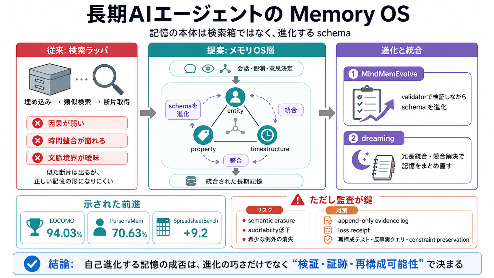

エージェントの長期記憶は、過去文書の再掲ではなく、意思決定の因果や時間整合を守るための schema（スキーマ） を進化させる問題として捉えるべきです。
— そのために「メモリOS」の発想が提案されています。
多くの実装は「埋め込み→類似検索→取り出し」で回しがちですが、これでは会話の文脈・意思決定の境界・因果関係が保持されにくいです。
投稿ではそれを「化石（fossil）」「墓場（graveyard）」の比喩で批判します。
記憶の本体はデータベースの検索性能ではなく、情報をどう束ね、どう統合し、どう整合させるかという schema（組織） の最適化です。
つまり“retrievalの工学”より“memory organizationの工学”が核心になります。
MindMemOSは、状況に応じてメモリ構造（スキーマ）を進化させる“メモリOS層”の考え方を示します。
統一的な entity-property timestructure を軸に、記憶の組織を運用します。
MindMemEvolve は validation-driven evolutionary search で、スキーマを検証しながら進化させます。
ボトルネックを「検索性能」から「スキーマ最適化」へ移す狙いです。
dreaming機構は、冗長レコードの統合や競合の解決を支えます。
“検索で拾う”より、“記憶をまとめ直す”方向に寄せることで性能向上を狙います。
統合
冗長性を畳み、より筋の良い記憶へ
競合解決
相矛盾する候補をスキーマ側で整理
投稿ではLOCOMOで94.03%、PersonaMemで70.63%などの改善が言及されています。
またSpreadsheetBenchでスキル進化が9.2ポイント改善したとされています。
dreamingや統合、競合解決は性能を上げる一方で、少数派の解釈や例外を消し去るリスクがあります。
その結果、後から検証できない「証跡喪失（消去）」や前提・因果の喪失が起き得ます。
進化の評価（validator）がベンチマーク成功や検索ヒットに偏ると、本当に重要な情報が落ちる可能性があります。
希少だが重要な例外を捨てたり、制約が保たれなかったりします。
偏り
“いま評価される指標”に適合してしまう
対策の方向
再構成テスト・反事実クエリ・constraint preservation
メモリOSの自己進化は有望ですが、成否は進化の巧さよりも「検証・証跡・非対称な権限・再構成可能性」で決まります。
別レイヤで append-only evidence log（証跡ログ）や loss receipt（損失証明）を保持する発想が鍵です。
No references found